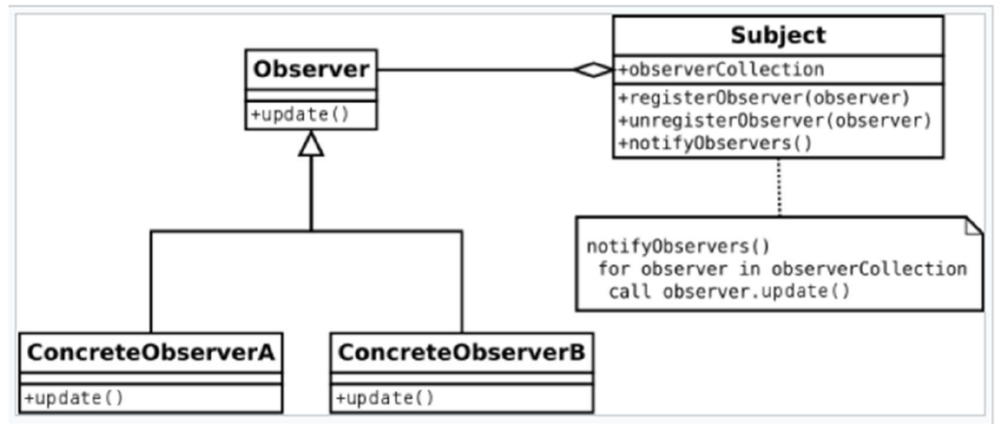
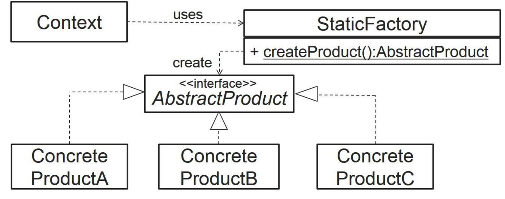
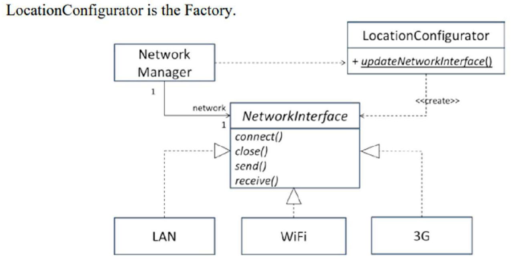
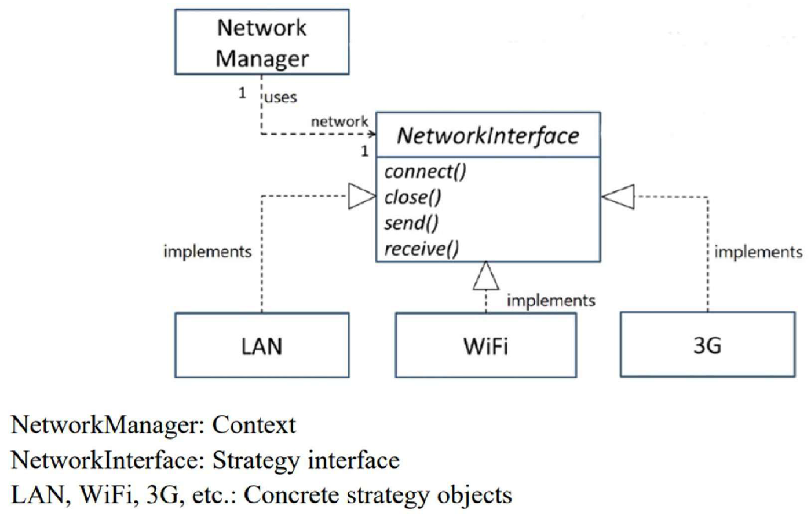
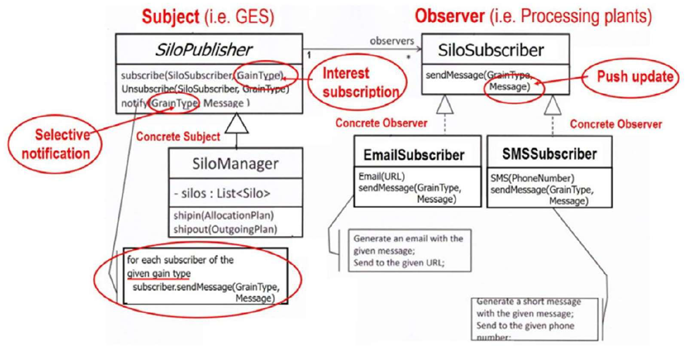

While system design establishes the macro architecture of subsystems, object design focuses on detailed class design within each subsystem. It refines domain abstractions, specifies typed attributes and operations, resolves visibility, and applies object-oriented design patterns to produce robust, reusable, and extensible software.
A Design Pattern (formalized by the “Gang of Four” — Gamma, Helm, Johnson, and Vlissides) is a general, reusable solution to a commonly occurring design problem within a given software context. Rather than prescribing finished code, a design pattern provides a structural template showing how classes and objects collaborate to solve a problem without tightly coupling components.
1. The Gang of Four (GoF) Pattern Taxonomy
Design patterns are categorized into three fundamental families based on their architectural intent:
| Category | Primary Architectural Purpose | Core Patterns Taught in SC2006 |
|---|---|---|
| Creational Patterns | Abstract the instantiation process, decoupling a system from how its objects are created, composed, and represented. | Factory Method, Abstract Factory, Singleton |
| Structural Patterns | Deal with the composition of classes and objects into larger, flexible structures while preserving low coupling. | Adapter, Decorator, Facade, Composite |
| Behavioral Patterns | Characterize complex control flow, algorithmic variability, and communication protocols between collaborating objects. | Strategy, Observer, Command, State |
2. Core Behavioral Patterns
The Strategy Pattern
The Strategy Pattern defines a family of interchangeable algorithms, encapsulates each algorithm in a separate class, and makes them interchangeable at runtime.

- Participants:
Context: Maintains a reference to aStrategyinterface object; delegates algorithmic execution to the strategy rather than implementing conditional logic directly.Strategy(<<interface>>): Declares a common interface for all supported algorithms (execute()oralgorithm()).ConcreteStrategy: Implements the specific algorithmic variation (e.g.CreditCardPayment,PayPalPayment,BitcoinPayment).
- Architectural Benefit: Adheres strictly to the
Open-Closed Principle (OCP). New algorithm variants are
introduced simply by adding a new
ConcreteStrategyclass without modifying or recompiling theContext. Eliminates brittle, nestedswitchorif-elseblocks.
The Observer Pattern
The Observer Pattern defines a one-to-many dependency between objects so that when one object (Subject) changes state, all its dependent objects (Observers) are automatically notified and updated.

- Participants:
Subject(Publisher): Maintains an internal collection of registered observers. Provides interfaces to subscribe (attach()), unsubscribe (detach()), and trigger broadcast updates (notify()).Observer(<<interface>>/ Subscriber): Declares an update contract (update()orrefresh()).ConcreteObserver: Implements theupdate()method to synchronize its internal state with the subject.
- Push vs. Pull Communication Models:
- Push Model: The Subject sends detailed state data
as parameters inside the
update(data)invocation. Highly efficient, but couples observers to specific data formats. - Pull Model: The Subject passes minimal or null data
(
update()), and observers explicitly query the Subject’s public getters for the specific data attributes they require. Maximizes observer independence.
- Push Model: The Subject sends detailed state data
as parameters inside the
3. Core Creational and Structural Patterns
The Factory Method Pattern
The Factory Method Pattern encapsulates object creation logic, defining an interface for creating an object while letting subclasses or factory classes decide which concrete class to instantiate:

- Motivation: Direct instantiation using the
newkeyword couples client code to specific concrete classes, violating the principle of Programming to an Interface. - Synergy with Strategy: In enterprise architectures,
Strategy and Factory patterns are combined: a Factory
inspects environmental configurations or user preferences, instantiates
the appropriate
ConcreteStrategy, and injects it into theContext.

Structural Patterns: Decorator vs. Adapter
| Dimension | Decorator Pattern | Adapter Pattern |
|---|---|---|
| Primary Intent | Dynamically attaches additional responsibilities and behaviors to an object at runtime without subclassing. | Converts the incompatible interface of an existing legacy or third-party class into an interface expected by clients. |
| Interface Preservation | Preserves the interface: The Decorator implements the exact same interface as the wrapped component, remaining transparent to clients. | Alters the interface: Maps client-expected method calls to matching legacy method calls. |
| Typical Use Case | GUI window scrollbars, I/O stream wrappers
(BufferedInputStream(FileInputStream)). |
Wrapping legacy database drivers or integrating third-party payment gateways. |
4. Official Tutorial Problems
Tutorial 6 Q2: Applying the Strategy Pattern to mobile network protocol switching
Question: A mobile device must communicate over diverse, interchangeable network protocols (e.g., 5G, Wi-Fi, Bluetooth, Satellite) depending on signal availability and user preference. The communication mechanism must remain transparent to the rest of the mobile system, and future protocols must be easily added without modifying client code.
(a) Identify the design problem and recommend an appropriate design pattern. (b) Construct a UML class diagram modeling the solution.
Solution:
Part (a): Design Problem and Pattern Selection
- Problem: Hardcoding network selection logic inside
mobile client classes using conditional
switch(protocolType)statements creates tight coupling. Every time a new network protocol is added or modified, core client classes must be edited and re-tested, violating the Open-Closed Principle. - Recommended Pattern: The Strategy
Pattern. Encapsulate each network communication protocol in a
separate concrete strategy class implementing a common abstract
interface (
INetworkProtocol).
Part (b): Strategy Pattern Class Diagram

MobileClient(Context): Holds a reference toINetworkProtocol; callssendData(data)andreceiveData()without knowing which physical protocol is active.INetworkProtocol(Strategy Interface): Defines the standard contract:connect(),disconnect(),send(byte[]),receive().- Concrete Strategies:
FiveGStrategy,WiFiStrategy,BluetoothStrategy,SatelliteStrategyencapsulate hardware-specific transmission protocols.
Tutorial 7 Q1: Grain Elevator System broadcast alerts via the Observer Pattern
Question: In the Grain Elevator System (GES), when a silo’s internal environmental conditions (moisture or temperature) exceed safe storage thresholds, notifications must be broadcast immediately to multiple registered stakeholders (Silo Supervisors, Grain Quality Inspectors, and Regional Buyers). Stakeholders can dynamically subscribe or unsubscribe at runtime.
(a) Identify the design problem and suggest an appropriate design pattern. (b) Draw the UML class diagram for the notification architecture.
Solution:
Part (a): Design Problem and Pattern Selection
- Problem: If the
Siloclass directly maintained hardcoded references to concrete inspector, supervisor, and buyer classes to call their notification methods, it would result in severe tight coupling. Adding new subscriber types would require editing theSilodomain entity. - Recommended Pattern: The Observer
Pattern. The
Siloacts as theSubject, and all stakeholders implement a unifiedObserverinterface.
Part (b): Observer Pattern Class Diagram

SiloPublisher(Subject Abstract Class):- Attributes:
observers: List<ISiloSubscriber> - Operations:
subscribe(subscriber: ISiloSubscriber),unsubscribe(subscriber: ISiloSubscriber),notifySubscribers(grainType: String, alertMsg: String).
- Attributes:
ISiloSubscriber(Observer Interface):- Operations:
sendMessage(grainType: String, message: String).
- Operations:
- Concrete Observers:
SupervisorSubscriber,InspectorSubscriber,BuyerSubscriberimplementsendMessage()to render GUI alerts, dispatch SMS messages, or log audit events.
Tutorial 7 Q2: Integrating Factory Method with Strategy Pattern
Question: In the mobile network strategy
architecture (Tutorial 6 Q2), client code still requires logic to
instantiate the appropriate concrete strategy
(new WiFiStrategy() vs new FiveGStrategy()).
How can the design be improved to completely decouple the client from
concrete instantiation?
Solution: Combine the Factory Pattern with the Strategy Pattern:
- Architectural Improvement: Introduce a
NetworkStrategyFactoryclass responsible exclusively for instantiating the correct strategy object based on hardware sensor readings or user settings:
public class NetworkStrategyFactory {
public static INetworkProtocol createProtocol(NetworkMode mode) {
switch (mode) {
case WIFI: return new WiFiStrategy();
case FIVE_G: return new FiveGStrategy();
case BLUETOOTH: return new BluetoothStrategy();
default: throw new IllegalArgumentException("Unknown mode");
}
}
}- Decoupling Benefit: The
MobileClientdepends strictly on theINetworkProtocolinterface and the factory. It never directly invokesnewon any concrete strategy class. Adding a future protocol (e.g.SatelliteStrategy) requires updating only the factory and adding the new strategy class; client code remains 100% untouched.